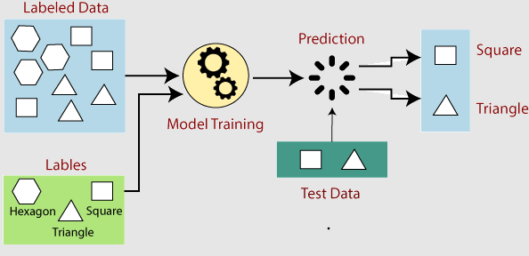

機械学習入門
機械学習（Machine Learning）は人工知能（AI）の一分野であり、コンピュータシステムがデータとアルゴリズムを利用して自動的に学習し、性能を向上させることを可能にします。
機械学習は発展し続ける分野であり、私たちとテクノロジーの関わり方を変え、複雑な問題を解決するための新しいツールと方法を提供しています。
機械学習は、コンピュータにデータを通じて学習させる技術であり、さまざまな業界で広く応用されています。
想像してみてください。あなたが子供にさまざまな動物を教えているとします。「すべての猫には耳が2つ、足が4本、ひげがある…」といった複雑なルールを教える必要はありません。代わりに、たくさんの猫の写真を見せて「これは猫だよ」と教えると、やがてその子供は見たことのない猫も自分で認識できるようになります。

機械学習はまさにこのようにコンピュータに学習させる方法です。複雑なルールを直接書くのではなく、大量のデータからコンピュータが自動的に法則やパターンを見つけ出します。
機械学習はどのように機能しますか？
機械学習は、コンピュータに大量のデータからパターンと法則を学習させ、意思決定や予測を行います。
- まず、データを収集して準備し、次に適切なアルゴリズムを選択してモデルを訓練します。
- 次に、モデルはパラメータを継続的に最適化して予測誤差を最小化し、新しいデータを正確に予測できるようになるまで学習します。
- 最後に、モデルは実際のアプリケーションに展開され、リアルタイムで予測や意思決定を行い、新しいデータに基づいて更新されます。
機械学習は反復的なプロセスであり、モデルの性能を向上させるために、モデルパラメータの調整や特徴量選択を何度も行う必要があります。
次の図は、機械学習の基本プロセスを示しています。

-
Labeled Data（ラベル付きデータ）：：図の青色の領域はラベル付きデータを示しており、これらのデータにはさまざまな幾何学的形状（六角形、正方形、三角形など）が含まれています。
-
Model Training（モデル訓練）：：この段階では、機械学習アルゴリズムがデータの特徴を分析し、これらの特徴に基づいてラベルを予測する方法を学習します。
-
Test Data（テストデータ）：：図の濃い緑色の領域はテストデータを示しており、正方形と三角形が含まれています。
-
Prediction（予測）：：モデルは訓練データから学習したルールを使用して、テストデータのラベルを予測します。図では、モデルはテストデータ内の正方形と三角形を予測しています。
-
Evaluation（評価）：：予測結果をテストデータの実際のラベルと比較し、モデルの正確性を評価します。
機械学習のワークフローは、おおまかに次のいくつかのステップに分けられます。
1. データ収集
- データ収集：これは機械学習プロジェクトの最初のステップであり、関連データの収集を含みます。データはデータベース、ファイル、ネットワーク、またはリアルタイムデータストリームから取得できます。
- データの種類：構造化データ（表形式データなど）または非構造化データ（テキスト、画像、動画など）です。
2. データ前処理
- データのクリーニング：欠損値、外れ値、エラー、重複データを処理します。
- 特徴量エンジニアリング：モデルの学習に役立つ最も関連性の高い特徴量を選択します。新しい特徴量の作成や既存の特徴量の変換が含まれる場合があります。
- データの標準化/正規化：データのスケールを調整して同じ範囲に揃えることで、特定のアルゴリズムの性能を向上させます。
3. モデル選択
- 問題の種類を特定する：問題の性質（分類、回帰、クラスタリングなど）に応じて、適切な機械学習モデルを選択します。
- アルゴリズムの選択：問題の種類とデータの特性に基づいて、1つまたは複数のアルゴリズムを選択して実験します。
4. モデル訓練
- データセットの分割：データを訓練セット、検証セット、テストセットに分割します。
- 訓練：訓練セットのデータを使用してモデルを訓練し、損失関数を最小化するようにモデルパラメータを調整します。
- 検証：検証セットを使用してモデルパラメータを調整し、過学習を防ぎます。
5. モデル評価
- 性能指標：テストセットを使用してモデルの性能を評価します。一般的な指標には、正確度（accuracy）、再現率（recall）、F1スコアなどがあります。
- 交差検証：モデルの汎化能力を評価する手法であり、データを複数のサブセットに分割して訓練と検証を行います。
6. モデル最適化
- ハイパーパラメータの調整：ハイパーパラメータは学習プロセスの前に設定されるパラメータであり、学習率や木の深さなどがあります。グリッドサーチ、ランダムサーチ、ベイズ最適化などの方法で調整できます。
- 特徴量選択：モデルの性能を向上させるために、特徴量を再評価して選択する必要がある場合があります。
7. モデル展開
- アプリケーションへの統合：訓練済みモデルを実際のアプリケーション（Webサイト、モバイルアプリ、ソフトウェアなど）に統合します。
- 監視と保守：モデルの性能を継続的に監視し、新しいデータに基づいてモデルを更新します。
8. フィードバックループ
- 継続的学習：機械学習モデルは、時間の経過とともに新しいデータから自動的に学習し、変化に適応するように設計できます。
技術詳細
- 損失関数：モデルの予測と実際の結果の差を測定する関数であり、モデル訓練の目標はこの関数を最小化することです。
- 最適化アルゴリズム：勾配降下法などがあり、損失関数を最小化するパラメータ値を見つけるために使用されます。
- 正則化：ペナルティ項を追加することでモデルの過学習を防ぐ手法です。
機械学習のワークフローは反復的であり、最適な性能を達成するために何度も調整と最適化が必要になる場合があります。さらに、データの蓄積とアルゴリズムの発展に伴い、機械学習モデルはより正確で効率的になります。
機械学習の種類
機械学習は主に次の3つのタイプに分類されます。
1. 教師あり学習（Supervised Learning）
- 定義：教師あり学習とは、ラベル付きデータを使用して訓練する手法であり、モデルは入力データとラベルの関係を学習して、予測や分類を行います。
- 応用：分類（スパムメール識別など）、回帰（住宅価格予測など）。
- 例：線形回帰、決定木、サポートベクターマシン（SVM）。
2. 教師なし学習（Unsupervised Learning）
- 定義：教師なし学習はラベルのないデータを使用し、モデルはデータ内の潜在的な構造やパターンを見つけ出そうとします。
- 応用：クラスタリング（顧客セグメント化など）、次元削減（データ可視化など）。
- 例：K-meansクラスタリング、主成分分析（PCA）。
3. 強化学習（Reinforcement Learning）
- 定義：強化学習は環境との相互作用を通じて、エージェントが試行錯誤しながら長期的な報酬を最大化する最適な方策を学習します。各行動の後、システムは報酬または罰を受け取り、行動の改善を導きます。
- 応用：ゲームAI（AlphaGoなど）、自動運転、ロボット制御。
- 例：Q学習、Deep Q Network（DQN）。

これら3つの機械学習タイプには、それぞれ応用シーンと利点があります。教師あり学習は明確なラベルがあるデータに適しており、教師なし学習はデータの内部構造を探索するのに適しており、強化学習は試行錯誤によって最適な方策を学習する必要があるシーンに適しています。
機械学習の応用分野
レコメンドシステム：例えば、TikTok（抖音）はあなたが興味を持つかもしれない動画を推薦し、淘宝（タオバオ）はあなたが購入しそうな商品を推薦し、NetEase Cloud Music（網易雲音楽）はあなたが好きな音楽を推薦します。
自然言語処理（NLP）機械学習は、音声認識、機械翻訳、感情分析、チャットボットなどに応用されています。例えば、Google翻訳、Siri、スマートカスタマーサービスなどです。
コンピュータビジョン：機械学習は、画像認識、物体検出、顔認識、自動運転などの分野で広く応用されています。例えば、自動運転車はカメラとセンサーを通じて周囲の障害物を認識し、歩行者や他の車両を識別します。
金融分析：機械学習は、株式市場予測、信用スコアリング、不正検出などの金融分野で重要な応用があります。例えば、銀行は機械学習を利用してクレジットカード取引における不正行為を検出します。
医療健康：機械学習は、医師の疾病診断、薬の副作用の発見、病状の進行予測などを支援します。例えば、IBMのWatsonシステムは医師が患者のカルテデータを分析し、診断や治療の提案を提供するのを支援します。
ゲームとエンターテインメント：機械学習はゲーム内の知的な対戦相手だけでなく、ゲームデザインや動的難易度調整などにも応用されています。例えば、AlphaGoは深層学習技術を用いて囲碁の世界チャンピオンに勝利しました。
機械学習の未来
データ量の爆発的な増加と計算能力の向上に伴い、機械学習の応用はさらに拡大し、より知的で効率的なシステムをもたらすでしょう。例えば：
強化学習：コンピュータが明確な指示なしに試行錯誤を通じて複雑な問題を解決できるようにします。例えば、AlphaGoやDota 2のゲームAIは強化学習を使用しています。
自己教師あり学習：現在の機械学習モデルは通常、大量のラベル付きデータを学習に必要としますが、自己教師あり学習はラベルのないデータでもより効果的な表現を学習できます。
深層学習：深層学習は機械学習の一分野であり、ニューラルネットワークの応用に焦点を当てています。画像認識や自然言語処理などで画期的な進展を遂げています。今後、深層学習は人工知能の発展を引き続き促進するでしょう。
機械学習を通じて、私たちはより賢いシステムを創り出し、煩雑なタスクを自動化し、日常生活のさまざまな側面を改善できます。技術の発展に伴い、機械学習は将来、各業界の中核的な原動力の一つになるでしょう。
その他の拡張